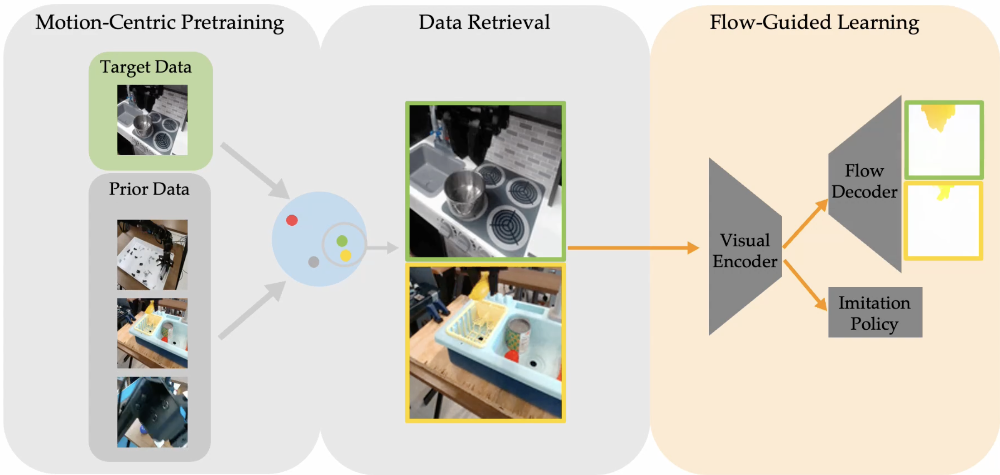
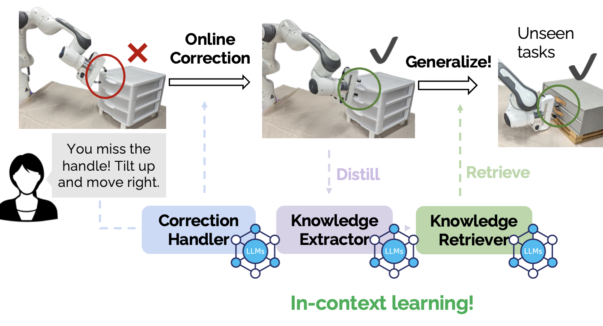
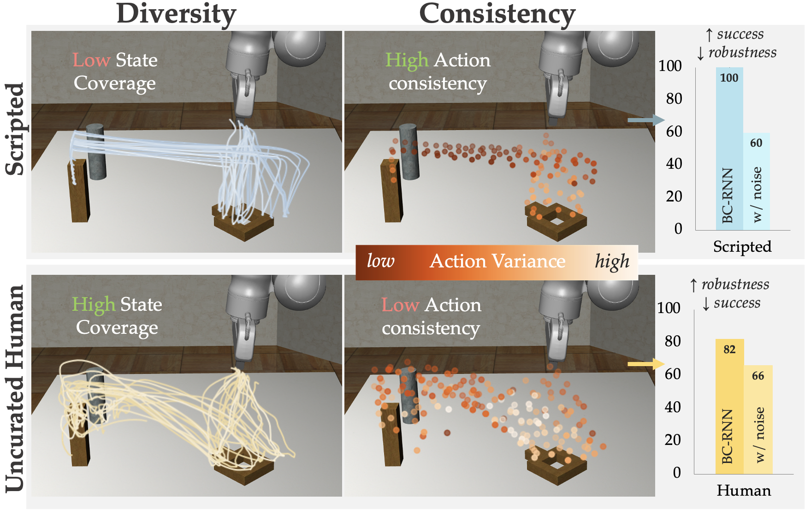
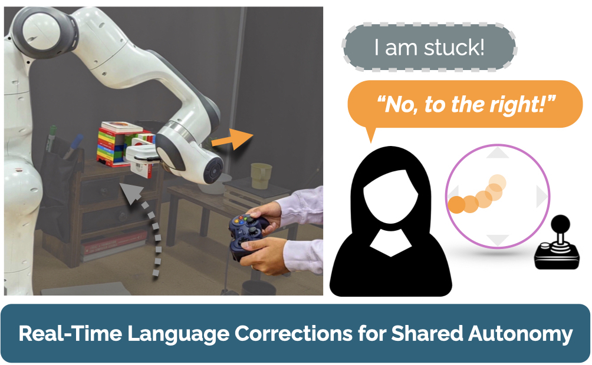
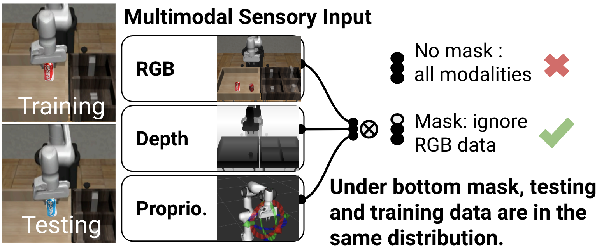
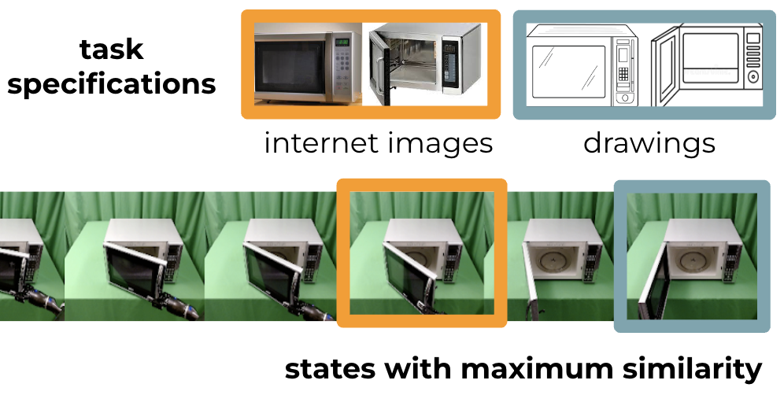
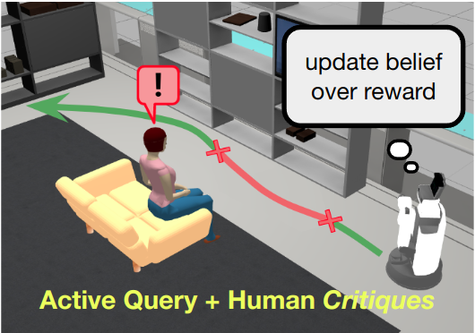

Publications
Selected Publications
|  |
FlowRetrieval: Flow-Guided Data Retrieval for Few-Shot Imitation LearningL. Lin, Y. Cui, A. Xie, T. Hua, D. SadighConference on Robot Learning (CoRL), November 2024 paper project |
|  |
Distilling and Retrieving Generalizable Knowledge for Robot Manipulation via Language CorrectionsL. Zha, Y. Cui, L. Lin, M. Kwon, M. G. Arenas, A. Zeng, F. Xia, D. SadighInternational Conference on Robotics and Automation (ICRA), May 2024 paper project |

|
HYDRA: Hybrid Robot Actions for Imitation LearningS. Belkhale, Y. Cui, D. SadighConference on Robot Learning (CoRL), November 2023 paper project |

|
Gesture-Informed Robot Assistance via Foundation ModelL. Lin, Y. Cui, Y. Hao, F. Xia, D. SadighConference on Robot Learning (CoRL), November 2023 paper project |
|  |
Data Quality in Imitation LearningS. Belkhale, Y. Cui, D. SadighConference on Neural Information Processing System (NeurIPS), December 2023 paper |
|  |
"No, to the Right" – Online Language Corrections for Robotic Manipulation via Shared AutonomyY. Cui*, S. Karamcheti*, R. Palleti, N. Shivakumar, P. Liang, D. SadighInternational Conference on Human-Robot Interaction (HRI), March 2023 paper project |
|  |
Masked Imitation Learning: Discovering Environment-Invariant Modalities in Multimodal DemonstrationsY. Hao*, R. Wang*, Z. Cao, Z. Wang, Y. Cui, D. SadighInternational Conference on Intelligent Robots and Systems (IROS), October 2023 paper |
|  |
Can Foundation Models Perform Zero-Shot Task Specification For Robot Manipulation?Y. Cui, S. Niekum, A. Gupta, V. Kumar, A. RajeswaranLearning for Dynamics & Control Conference (L4DC), June 2022 paper |

|
The EMPATHIC Framework for Task Learning from Implicit Human FeedbackY. Cui, Q. Zhang, A. Allievi, P. Stone, S. Niekum, and W. KnoxConference on Robot Learning (CoRL), Nov 2020 paper project |

|
Uncertainty-Aware Data Aggregation for Deep Imitation LearningY. Cui, D. Isele, S. Niekum and K. FujimuraInternational Conference on Robotics and Automation (ICRA), May 2019 paper |
|  |
Active Reward Learning from CritiquesY. Cui and S. NiekumInternational Conference on Robotics and Automation (ICRA), May 2018 paper |
Other Conference & Journal Publications
- Open X-Embodiment: Robotic Learning Datasets and RT-X Models Open X-Embodiment Collaboration, International Conference on Robotics and Automation (ICRA), May 2024.
- Understanding the Relationship between Interactions and Outcomes in Human-in-the-Loop Machine Learning Y. Cui, P. Koppol, H. Admoni, S. Niekum, R. Simmons, A. Steinfeld, T. Fitzgerald. Proceedings of the International Joint Conference on Artificial Intelligence (IJCAI, Survey Track). Aug 2021.
- Risk-Aware Active Inverse Reinforcement Learning Y. Cui, D. Brown and S. Niekum. Proceedings of the 2nd Annual Conference on Robot Learning (CoRL), Oct. 2018.
- Modeling Sensory-Motor Decisions in Natural Behavior R. Zhang, S. Zhang, M. H. Tong, Y. Cui, C. A. Rothkopf, D. H. Ballard and M. M. Hayhoe. PLOS Computational Biology, Oct 2018.
- Indoor Follow Me Drone W. Mao, Z. Zhang, L. Qiu, J. He, Y. Cui, and S. Yun. Proceedings of the 15th Annual International Conference on Mobile Systems, Applications, and Services, June, 2017.
Workshop Publications
- Distilling and Retrieving Generalizable Knowledge for Robot Manipulation via Language Corrections L. Zha, Y. Cui, L. Lin, M. Kwon, M. G. Arenas, A. Zeng, F. Xia, D. Sadigh. 2nd Workshop on Language and Robot Learning: Language as Grounding @ CoRL, Nov. 2023.
- Shared Autonomy for Robotic Manipulation with Language Corrections S. Karamcheti*, R. Palleti*, Y. Cui, P. Liang, D. Sadigh. Workshop on Learning with Natural Language Supervision @ ACL, May 2022.
- Aux-AIRL: End-to-End Self-Supervised Reward Learning for Extrapolating beyond Suboptimal Demonstrations Y. Cui, B. Liu, A. Saran, S. Giguere, P. Stone, and S. Niekum. ICML Workshop on Self-Supervised Learning for Reasoning and Perception, July 2021.
- Reaction Modeling for Deriving General Task Information from Implicit Human Feedback Y. Cui, Q. Zhang, S. Jain, A. Allievi, P. Stone, S. Niekum, and W. Knox. HRI Workshop on Exploring Applications for Autonomous Non-Verbal Human-Robot Interactions, Mar 2021.
- Active Learning from Critiques via Bayesian Inverse Reinforcement Learning Y. Cui and S. Niekum. Rotics: Science and Systems (R:SS) Workshop on Mathematical Models, Algorithms, and Human-Robot Interaction, July 2017.
- Trajectory-based visual analytics for anomalous human movement analysis using social media J. Chae, Y. Cui, Y. Jang, G. Wang, A. Malik, D.S. Ebert. EuroVis Workshop on Visual Analytics (EuroVA), May, 2015.